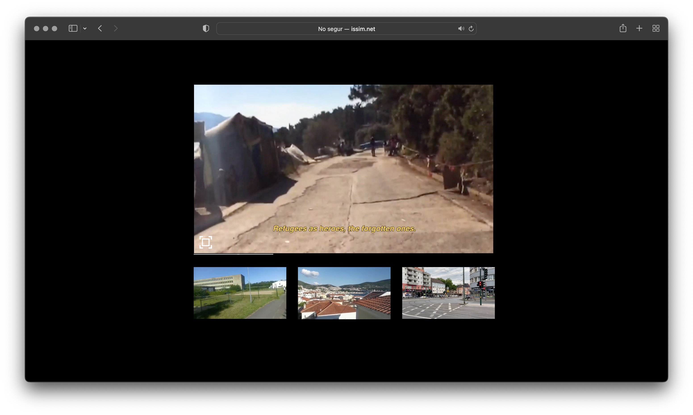
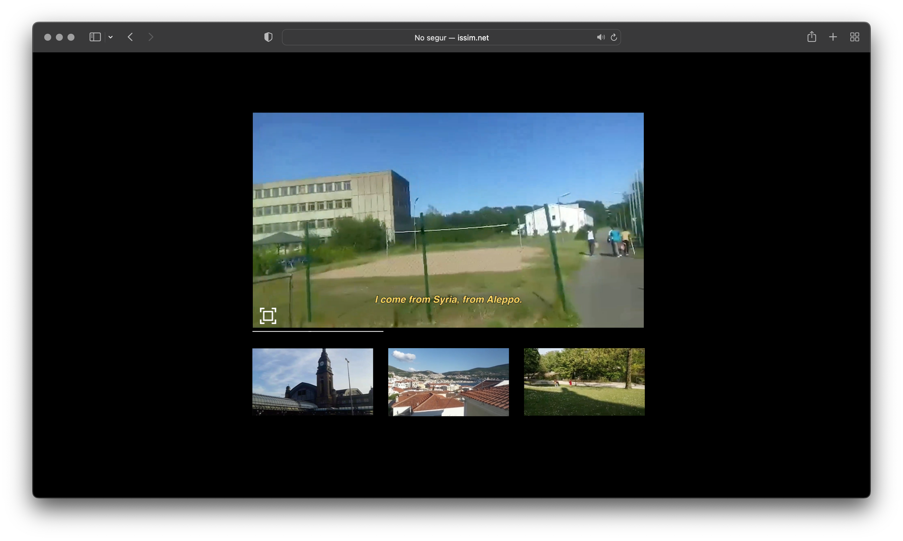
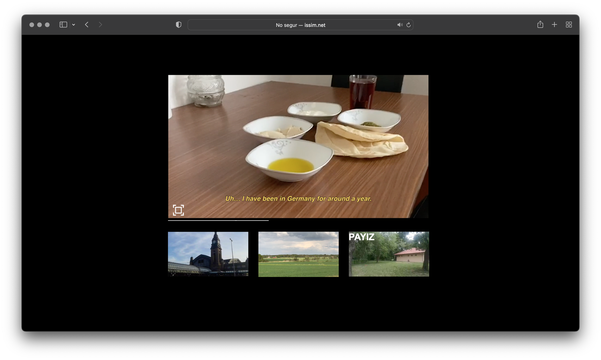
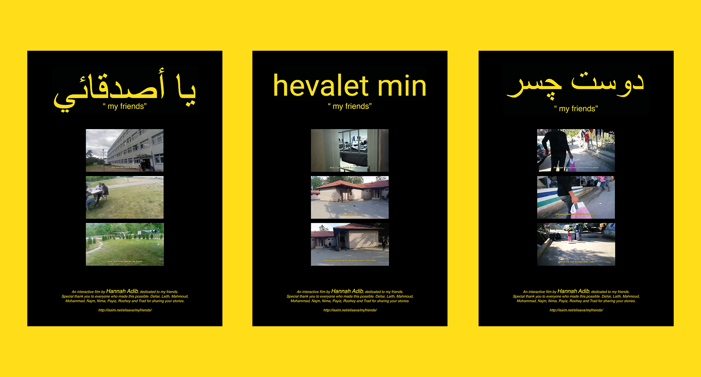
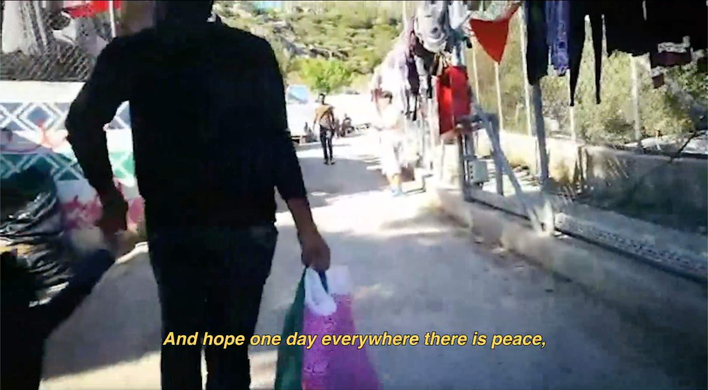
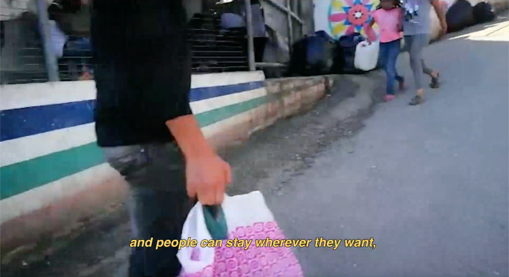
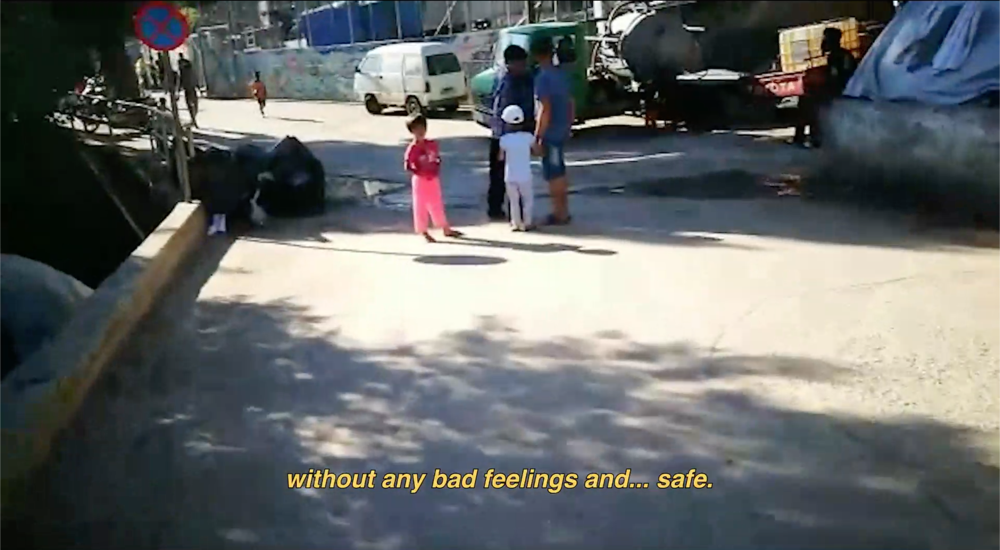

My friends
Interactive documentary exploring the lives of nine refugees
Created after my return from a gap year volunteering at the Refugee Hotspot on the Greek island of Samos, this interactive documentary offers a glimpse into the daily lives of nine refugees and their journeys. Each short video captures the unique personality and story of its narrator, with all audio-visual material personally crafted by the participants, who were given complete creative and narrative freedom.
This documentary provides a space for refugees to share their voices, express their thoughts, and tell their own stories in their own words. It invites you to step into their world, feel what they feel, understand their experiences, and foster empathy. It seeks to challenge societal misconceptions and offer a personal and honest portrayal of their realities and thoughts.
Visual design
The website, created using Korsakow, embraces a minimalistic and immersive design. The aesthetic is deliberately simple, featuring a black background that allows the videos to take centre stage, ensuring that there are no distractions, drawing the viewer's full attention to the stories unfolding on the screen.
Korsakow, a tool for interactive documentary creation, enables non-linear storytelling by linking short videos into a dynamic network. This approach allows users to navigate through the stories organically, choosing different pathways and perspectives based on their interactions. The fragmented yet interconnected structure mirrors the real-life journeys of the protagonists, reinforcing the themes of displacement, uncertainty, and resilience.
The videos are created using mobile phones by the participants, providing an unfiltered and authentic quality to the footage. The first-person perspective fosters a sense of intimacy, making viewers feel as though they are stepping directly into the lives of the storytellers.
Year
April 2020
Tags
(Web design)
(Experimental Design)
(Video Editing)
(Social Impact)
In collaboration with
Deliar, Laith, Mahmoud, Mohammed, Najm, Nima, Payiz, Roohey & Trad
Links








